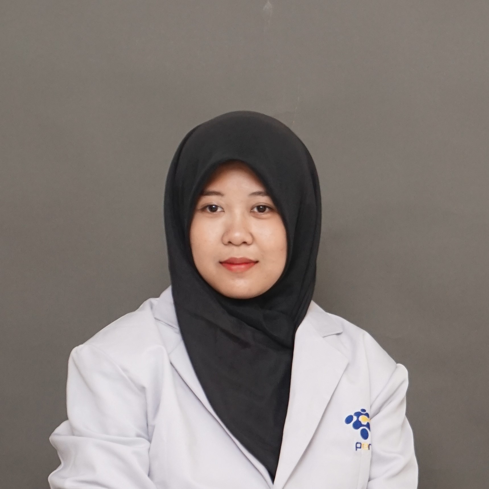

Profil Saya
Putri Alya Shafiqa
Mahasiswi D3 Teknik Informatika
Biodata Diri
- Nama: Putri Alya Shafiqa
- Status: Mahasiswi Aktif
- Program Studi: D3 Teknik Informatika
- Jurusan: Departemen Teknik Informatika dan Komputer
- Universitas: Politeknik Elektronika Negeri Surabaya
Deskripsi Diri
Halo! Saya Putri Alya Shafiqa, seorang mahasiswi yang memiliki ketertarikan pada dunia teknologi dan pemrograman. Sebelumnya, saya merupakan siswa SMK jurusan Rekayasa Perangkat Lunak dan saat ini melanjutkan pendidikan di bidang Teknik Informatika.
Saya senang mempelajari hal-hal baru, terutama yang berkaitan dengan pengembangan perangkat lunak, teknologi web, dan kecerdasan buatan. Saya juga berusaha untuk terus mengembangkan kemampuan saya melalui pembelajaran dan berbagai proyek.
Hobi dan Keahlian
Hobi
- Mempelajari teknologi baru
- Bermain Minecraft
Keahlian
- HTML dan CSS
- PHP
- Laravel
- Git
- Dasar-dasar JavaScript
Media Sosial
Kamu dapat mengenal saya lebih lanjut melalui Instagram .